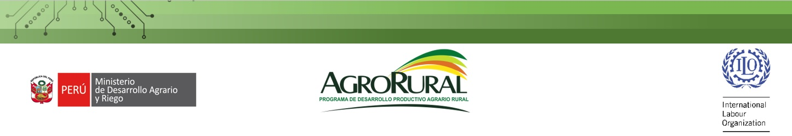

TALLER FORTALECIMIENTO DE LAS COMPETENCIAS DE LOS ESPECIALISTAS EN EXTENSION AGRARIA DE LAS DIRECCIONES REGIONALES AGRARIAS, AGENCIAS AGRARIAS Y UNIDADES ZONALES DE AGRORURAL EN EL MARCO DEL PROYECTO: “MEJORAMIENTO DE LAS CAPACIDADES DE LAS DIRECCIONES REGIONALES AGRARIAS Y AGENCIAS AGRARIAS EN 11 DEPARTAMENTOS”, CON CUI 2516447
FACILITADORA
FACILITADORA
Silvia Moreno Roque
Consultora IGD GROUP SAC, Master Trainer IMESUN OIT
CONTENIDO
- 1. Enfoque del proceso de formación
- 2. Ciclo de aprendizaje por experiencia
- 3. Diseño de las actividades de Capacitación en los SEAR
- 3.1. Caracterización del grupo meta
- 3.2. Definir Objetivos de aprendizaje
- 3.3. Metodología en los Servicios de Extensión Agraria Rural
- 3.4. Planes de sesión
- 3.5. El aprendizaje de los adultos
- 3.6. Demostración de sesiones
- 3.7. Preparación de sesiones
- 3.8. Elaboración de los planes de sesión a cargo de los participantes
- 3.9. Aplicación de sesiones
- 3.10. Retroalimentación de las sesiones SEAR.
- 4. Plan de acción para la supervisión de SEAR
- 5. Retroalimentación en los Servicios de Extensión Agraria Rural
- 6. Lecciones aprendidas
HORAS: 40 HORAS CRONOLOGICAS